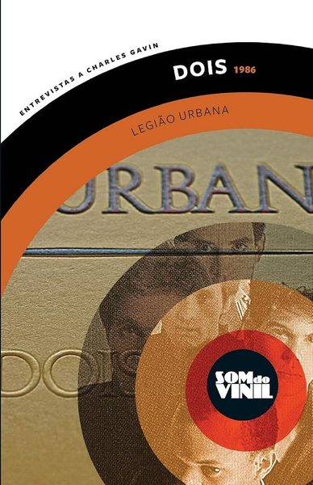

"Dois" é tratado como obra-prima intocável do rock nacional. Mas, segundo a análise do Pensando Nisso, o que aconteceu no estúdio da EMI nos anos 80 foi uma verdadeira guerra — e a história oficial sobre quem é o "pai" do disco não fecha.
Savalla x Mayrton: duas versões
O vídeo cruza as versões do engenheiro de som Carlos Savalla e do produtor Mayrton Bahia para entender quem realmente operou o "milagre" na mesa de mixagem.
O ultimato a Renato Russo
Um dos pontos altos é o episódio em que alguém teve coragem de peitar Renato Russo quando "Índios" quase foi descartada do disco — e como o caos do estúdio acabou salvando a banda da autodestruição.
O veredito
A análise termina com um veredito sobre o verdadeiro produtor de "Dois" e com o que veio depois, quando a Legião já caminhava para o sucesso absoluto.
Pra ler e ouvir

Dois – Legião Urbana (coleção O Som do Vinil, entrevistas a Charles Gavin) – livro
R$ 27,55 visto em 26/11/2026
Ver preço atual na AmazonRenato Russo – O Filho da Revolução (livro, edição revista e ampliada)
Preço muda o tempo todo — confira na loja
Ver preço atual na AmazonOs links de produtos são de afiliado: podemos receber comissão pelas compras, sem custo extra para você.